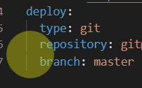
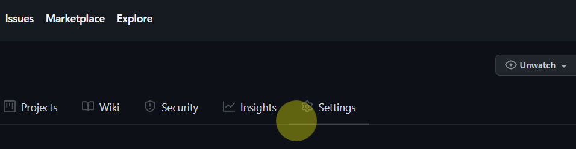
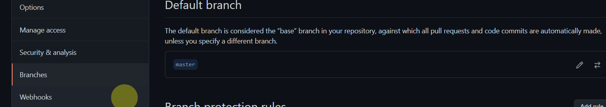
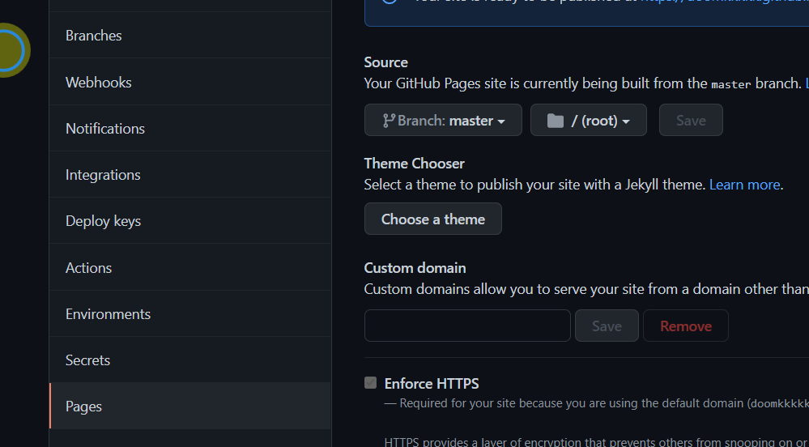

前言
个人博客的搭建我个人还是比较喜欢hexo+github的，主要是因为简单漂亮还不用花钱>^<
(13条消息) （一）Github + Hexo 搭建个人博客超详细教程_feezxe的博客-CSDN博客
这个是feezxe前辈的教程，超级详细，直接跟着敲代码用不了一个小时就ok
github默认分支问题的解决
这里的话主要针对我之前的一个报错做一个补充吧算是，之前我在本地演示的时候是没用问题的
1 | hexo g |
这是本地开启的命令
但是上传到github上的时候在git bash here这边也没用报错，但是打开的时候啥也没有。
这里可能涉及一个新版github默认分支的一个改写问题
根据前辈的博客搭建上传，其实我们是上传到了我们仓库的master分支

我们直接进入我们github上的仓库，点击仓库里的settings,再点击Branches，把default branch修改为master


再把页面连接的仓库分支改为master就欧克了
